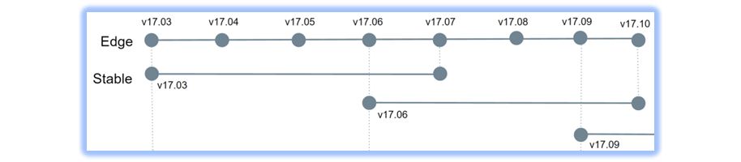
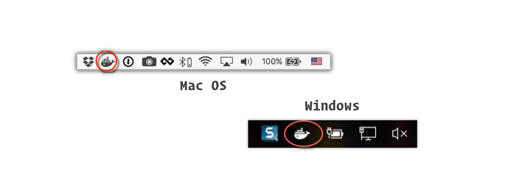
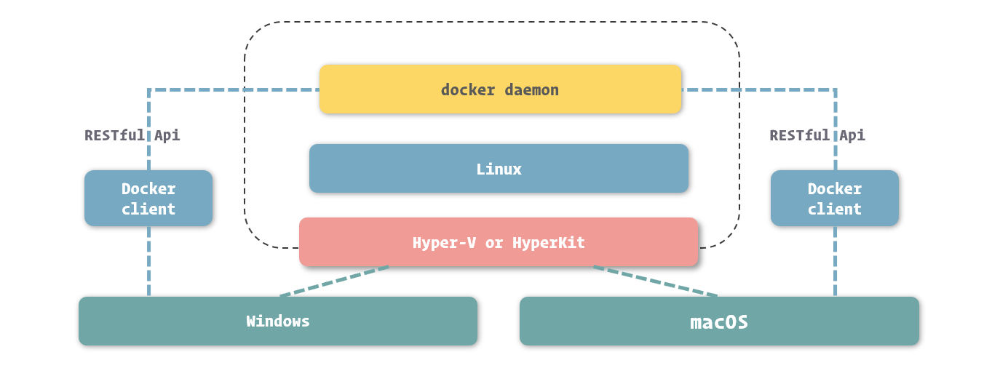
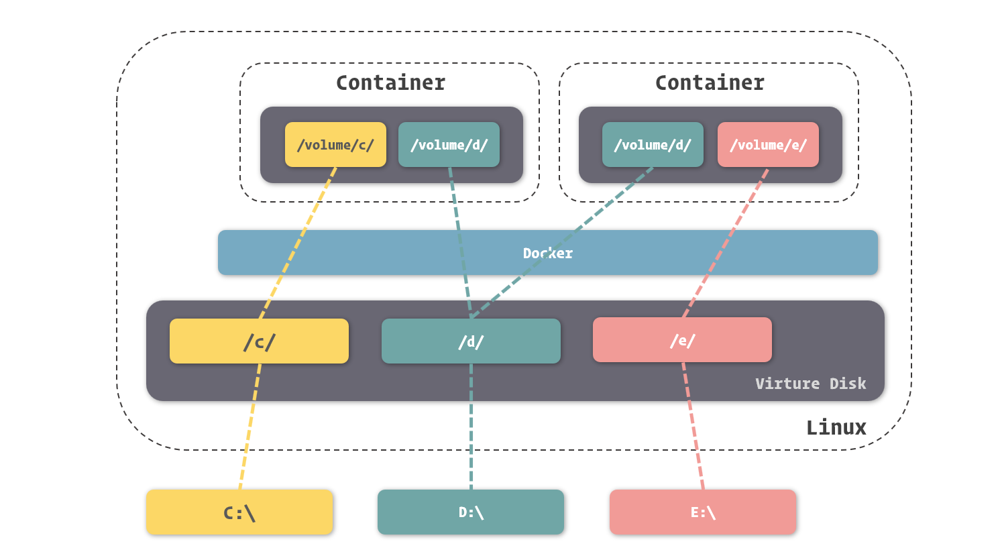
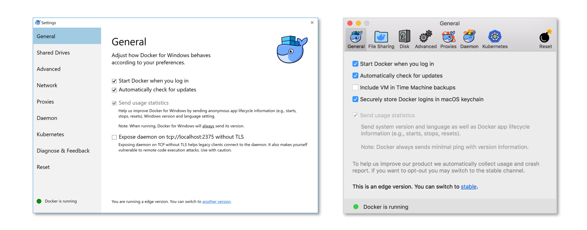

Docker安装运行

文章目录
搭建 Docker 运行环境
既然 Docker 是一款实用软件，我们就不得不先从它的安装说起，只有让 Docker 运行在我们的计算机上，才能更方便我们对 Docker 相关知识和使用方式的学习。得益于与商业性的优雅结合，Docker 背后拥有大量的优秀开发者为其提供技术支持，而这个优势所造就的结果之一，就是 Docker 拥有丰富且完善的安装体系，我们可以很轻松的通过多种方式安装和运行 Docker。
安装前的准备
由于 Docker 容器实现本身就采用了 Linux 内核中很多的特性，所以它自然与 Linux 系统亲密性很高，所以我们可以很轻松的将 Docker Engine 安装在 Linux 系统中。
不过，在安装之前，我还得不厌其烦的啰嗦一些基本概念，让大家在安装 Docker 时能够更好的进行选择。掌握这些概念，能够帮助大家理解一些安装流程中操作的目的，不至于总是一味的进行“下一步”式安装。
Docker Engine 的版本
在安装 Docker 之前，我们先来了解一下 Docker 的版本定义，这有利于我们在之后的开发中选择和使用合适的 Docker 版本。
对于 Docker Engine 来说，其主要分为两个系列：
- 社区版 ( CE, Community Edition )
- 企业版 ( EE, Enterprise Edition )
社区版 ( Docker Engine CE ) 主要提供了 Docker 中的容器管理等基础功能，主要针对开发者和小型团队进行开发和试验。而企业版 ( Docker Engine EE ) 则在社区版的基础上增加了诸如容器管理、镜像管理、插件、安全等额外服务与功能，为容器的稳定运行提供了支持，适合于中大型项目的线上运行。
社区版和企业版的另一区别就是免费与收费了。对于我们开发者来说，社区版已经提供了 Docker 所有核心的功能，足够满足我们在开发、测试中的需求，所以我们直接选择使用社区版进行开发即可。在这本小册中，所有的内容也是围绕着社区版的 Docker Engine 展开的。
从另外一个角度，Docker Engine 的迭代版本又会分为稳定版 ( Stable release ) 和预览版 ( Edge release )。不论是稳定版还是预览版，它们都会以发布时的年月来命名版本号，例如如 17 年 3 月的版本，版本号就是 17.03。

Docker Engine 的稳定版固定为每三个月更新一次，而预览版则每月都会更新。在预览版中可以及时掌握到最新的功能特性，不过这对于我们仅是使用 Docker 的开发者来说，意义并不是特别重大的，所以我还是更推荐安装更有保障的稳定版本。
在主要版本之外，Docker 官方也以解决 Bug 为主要目的，不定期发布次要版本。次要版本的版本号由主要版本和发布序号组成，如：17.03.2 就是对 17.03 版本的第二次修正。
Docker 的环境依赖
由于 Docker 的容器隔离依赖于 Linux 内核中的相关支持，所以使用 Docker 首先需要确保安装机器的 Linux kernel 中包含 Docker 所需要使用的特性。以目前 Docker 官方主要维护的版本为例，我们需要使用基于 Linux kernel 3.10 以上版本的 Linux 系统来安装 Docker。
也许 Linux kernel 的版本还不够直观，下面的表格就直接展示了 Docker 对主流几款 Linux 系统版本的要求。
操作系统
支持的系统版本
CentOS
CentOS 7
Debian
Debian Wheezy 7.7 (LTS)
Debian Jessie 8 (LTS)
Debian Stretch 9
Debian Buster 10
Fedora
Fedora 26
Fedora 27
Ubuntu
Ubuntu Trusty 14.04 (LTS)
Ubuntu Xenial 16.04 (LTS)
Ubuntu Artful 17.10
当然，在较低版本的 Linux 系统中也能安装 Docker，不过只能是版本较低的 Docker，其功能存在一些缺失，或者与最新版本有所区别。在这本小册里，我们主要以较新版本的 Docker 功能和操作作为介绍，所以如果条件允许，建议将系统升级到支持最新版本 Docker 的系统版本。
在 Linux 系统中安装 Docker
因为 Docker 本身就基于 Linux 的核心能力，同时目前主流的 Linux 系统中所拥有的软件包管理程序，已经可以很轻松的帮助我们处理各种依赖问题，所以在 Linux 中安装 Docker 并非什么难事。
更多的细节就不多说了，Docker 已经为我们准备了好了各系统的安装包，毕竟安装 Docker 并不是我们所要掌握的重点，所以这里我就直接给出安装的命令了。
CentOS
1 2 3 4 5 6 7 |
$ sudo yum install yum-utils device-mapper-persistent-data lvm2 $ $ sudo yum-config-manager --add-repo https://download.docker.com/linux/centos/docker-ce.repo $ sudo yum install docker-ce $ $ sudo systemctl enable docker $ sudo systemctl start docker |
Debian
1 2 3 4 5 6 7 8 9 |
$ sudo apt-get install apt-transport-https ca-certificates curl gnupg2 software-properties-common $ $ curl -fsSL https://download.docker.com/linux/debian/gpg | sudo apt-key add - $ sudo add-apt-repository "deb [arch=amd64] https://download.docker.com/linux/debian $(lsb_release -cs) stable" $ sudo apt-get update $ sudo apt-get install docker-ce $ $ sudo systemctl enable docker $ sudo systemctl start docker |
Fedora
1 2 3 4 5 6 7 |
$ sudo dnf -y install dnf-plugins-core $ $ sudo dnf config-manager --add-repo https://download.docker.com/linux/fedora/docker-ce.repo $ sudo dnf install docker-ce $ $ sudo systemctl enable docker $ sudo systemctl start docker |
Ubuntu
1 2 3 4 5 6 7 8 9 |
$ sudo apt-get install apt-transport-https ca-certificates curl software-properties-common $ $ curl -fsSL https://download.docker.com/linux/ubuntu/gpg | sudo apt-key add - $ sudo add-apt-repository "deb [arch=amd64] https://download.docker.com/linux/ubuntu $(lsb_release -cs) stable" $ sudo apt-get update $ sudo apt-get install docker-ce $ $ sudo systemctl enable docker $ sudo systemctl start docker |
上手使用
在安装 Docker 完成之后，我们需要先启动 docker daemon 使其能够为我们提供 Docker 服务，这样我们才能正常使用 Docker。
在我们通过软件包的形式安装 Docker Engine 时，安装包已经为我们在 Linux 系统中注册了一个 Docker 服务，所以我们不需要直接启动 docker daemon 对应的 dockerd 这个程序，而是直接启动 Docker 服务即可。启动的 Docker 服务的命令其实我已经包含在了前面谈到的安装命令中，也就是：
1
|
$ sudo systemctl start docker |
当然，为了实现 Docker 服务开机自启动，我们还可以运行这个命令：
1
|
$ sudo systemctl enable docker |
docker version
在 Docker 服务启动之后，我们先来尝试一个最简单的查看 Docker 版本的命令：docker version。
1 2 3 4 5 6 7 8 9 10 11 12 13 14 15 16 17 18 19 |
$ sudo docker version Client: Version: 18.06.1-ce API version: 1.38 Go version: go1.10.3 Git commit: e68fc7a Built: Tue Aug 21 17:23:03 2018 OS/Arch: linux/amd64 Experimental: false Server: Engine: Version: 18.06.1-ce API version: 1.38 (minimum version 1.12) Go version: go1.10.3 Git commit: e68fc7a Built: Tue Aug 21 17:25:29 2018 OS/Arch: linux/amd64 Experimental: false |
这个命令能够显示 Docker C/S 结构中的服务端 ( docker daemon ) 和客户端 ( docker CLI ) 相关的版本信息。在默认情况下，docker CLI 连接的是本机运行的 docker daemon ，由于 docker daemon 和 docker CLI 通过 RESTful 接口进行了解耦，所以我们也能修改配置用于操作其他机器上运行的 docker daemon 。
docker info
如果想要了解 Docker Engine 更多相关的信息，我们还可以通过 docker info 这个命令。
1 2 3 4 5 6 7 8 9 10 11 12 13 14 15 |
$ sudo docker info Containers: 0 Running: 0 Paused: 0 Stopped: 0 Images: 0 Server Version: 18.06.0-ce Storage Driver: overlay2 Backing Filesystem: extfs Supports d_type: true Native Overlay Diff: true Logging Driver: json-file Cgroup Driver: cgroupfs ## ...... Live Restore Enabled: false |
在 docker info 这条命令的结果中，我们可以看到正在运行的 Docker Engine 实例中运行的容器数量，存储的引擎等等信息。由于命令结果比较多，这里我省略了大部分内容，大家可以自己操作来尝试获得完整的信息。在之后的章节里，较多结果的命令我也会省去一些与讲解内容无关的部分，节约大家阅读的时间并强化重点。
配置国内镜像源
在很多编程语言中，为了更好的向大家提供依赖包的管理，通常都会有一些组织研发相应的包管理工具，例如 Java 的 Maven，PHP 的 Composer，Node.js 的 NPM 等等。而这些管理工具背后，也对应着一个默认的依赖包仓库。
由于众所周知的原因，我们直接连接这些位于国外服务器上的仓库去获取依赖包速度是非常慢的，这时候我们通常会采用国内一些组织或开发者贡献的国内镜像仓库 ( 注意，这里的“镜像”是指复制于国外源的意思，而不是 Docker 里的镜像 )。
在 Docker 中也有一个由官方提供的中央镜像仓库，不过，它与之前我们所说的国外依赖包仓库一样，除了慢的可怜以外，还经常莫名其妙的完全无法访问。
为了解决这个问题，我们最佳的方式依旧是在国内找一个镜像仓库的镜像源进行替换。很感谢 DaoCloud、阿里云等企业的支持，在国内我们可以找到许多镜像源。这里我们给出一个由 Docker 官方提供的国内镜像源：
( 注：部分读者反映配置了这个镜像源无效，大家需要注意此地址的协议是 https，不要搞错哟 )
那么有了地址，我们要如何将其配置到 Docker 中呢？
在 Linux 环境下，我们可以通过修改 /etc/docker/daemon.json ( 如果文件不存在，你可以直接创建它 ) 这个 Docker 服务的配置文件达到效果。
1 2 3 4 5 |
{
"registry-mirrors": [
"https://registry.docker-cn.com"
]
} |
在修改之后，别忘了重新启动 docker daemon 来让配置生效哟：
1
|
$ sudo systemctl restart docker |
要验证我们配置的镜像源是否生效，我们可以通过 docker info 来查阅当前注册的镜像源列表。
1 2 3 4 5 |
$ sudo docker info ## ...... Registry Mirrors: https://registry.docker-cn.com/ ## ...... |
在 Windows 和 Mac 中使用 Docker
对于开发来说，Windows 和 macOS 是更为常见和常用的系统，所以也很有必要了解在 Windows 和 macOS 中使用 Docker 的方法。很幸运的是，Docker 的官方对这两个系统提供了强有力的支持，我们可以很轻松的在这两个系统中运行 Docker。在这一小节中，我们就来了解一下 Docker 在 Windows 和 macOS 中安装的方式以及运行的原理。
Docker Desktop
在大多数情况下，我们的开发工作是在 Windows 或 macOS 这两个操作系统中进行的，既然 Docker 是我们用来解决开发、测试到运维整条产品线的工具，自然支持这两个系统是不可或缺的功能。
如同封装 Docker 为我们提供了轻松的虚拟化运行环境一样，Docker 在 Windows 和 macOS 中的安装也是极易完成的。Docker 官方为 Windows 和 macOS 系统单独开辟了一条产品线，名为 Docker Desktop，其定位是快速为开发者提供在 Windows 和 macOS 中运行 Docker 环境的工具。
Docker Desktop 实现容器化与 Docker Engine 是一致的，这就保证了我们在 Windows 和 macOS 中开发所使用的环境可以很轻松的转移到其他的 Docker 实例中，不论这个 Docker 实例是运行在 Windows、macOS 亦或是 Linux。
Docker Desktop 产品线包含两个软件，也就是针对 Windows 系统的 Docker for Windows 和针对 macOS 的 Docker for Mac。
安装 Docker Desktop
在安装 Docker for Windows 和 Docker for Mac 之前，我们依然要了解一下两款软件对操作系统及软硬件的要求，只有达到了这些要求，我们才能顺利的安装上 Docker for Windows 和 Docker for Mac。
对于 Windows 系统来说，安装 Docker for Windows 需要符合以下条件：
- 必须使用 Windows 10 Pro ( 专业版 )
- 必须使用 64 bit 版本的 Windows
对于 macOS 系统来说，安装 Docker for Mac 需要符合以下条件：
- Mac 硬件必须为 2010 年以后的型号
- 必须使用 macOS El Capitan 10.11 及以后的版本
另外，虚拟机软件 VirtualBox 与 Docker Desktop 兼容性不佳，建议在安装 Docker for Windows 和 Docker for Mac 之前先卸载 VirtualBox。
在确认系统能够支持 Docker Desktop 之后，我们就从 Docker 官方网站下载这两个软件的安装程序，这里直接附上 Docker Store 的下载链接，供大家直接下载：
- Docker for Windows ( https://store.docker.com/editions/community/docker-ce-desktop-windows )
- Docker for Mac ( https://store.docker.com/editions/community/docker-ce-desktop-mac )
安装 Docker for Windows 和 Docker for Mac 的方法十分简单，按 Windows 或 macOS 常见的软件安装方式安装即可。
启动 Docker
像 Linux 中一样，我们要在 Windows 和 macOS 中使用 Docker 前，我们需要先将 Docker 服务启动起来。在这两个系统中，我们需要启动的就是刚才我们安装的 Docker for Windows 和 Docker for Mac 了。
启动两个软件的方式很简单，我们只需要通过操作系统的快捷访问功能查找到 Docker for Windows 或 Docker for Mac 并启动即可。
打开软件之后，我们会在 Windows 的任务栏或者 macOS 的状态栏中看到 Docker 的大鲸鱼图标。

Docker for Windows 或 Docker for Mac 在启动时，这只大鲸鱼上的集装箱会一直闪动，这说明 Docker 程序正在部署 docker daemon 所需要的一些环境并执行 docker daemon 的启动。当集装箱不再闪动，就说明 Docker 服务已经准备就绪，我们就可以在 Windows 和 macOS 中使用 Docker 了。
Docker Desktop 为我们在 Windows 和 macOS 中使用 Docker 提供了与 Linux 中几乎一致的方法，我们只需要打开 Windows 中的 PowerShell 获得 macOS 中的 Terminal，亦或者 Git Bash、Cmder、iTerm 等控制台类软件，输入 docker 命令即可。
使用 docker version 能够看到 Docker 客户端的信息，我们可以在这里发现程序运行的平台：
1 2 3 4 5 |
λ docker version Client: ## ...... OS/Arch: windows/amd64 ## ...... |
Docker Desktop 的实现原理
通过之前小节的介绍，我们知道 Docker 的核心功能，也就是容器实现，是基于 Linux 内核中 Namespaces、CGroups 等功能的。那么大体上可以说，Docker 是依赖于 Linux 而存在的。那么问题来了，Docker Desktop 是如何实现让我们在 Windows 和 macOS 中如此顺畅的使用 Docker 的呢？
其实 Docker Desktop 的实现逻辑很简单：既然 Windows 和 macOS 中没有 Docker 能够利用的 Linux 环境，那么我们生造一个 Linux 环境就行啦！Docker for Windows 和 Docker for Mac 正是这么实现的。
由于虚拟化在云计算时代的广泛使用，Windows 和 MacOS 也将虚拟化引入到了系统本身的实现中，这其中就包含了之前我们所提到的通过 Hypervisor 实现虚拟化的功能。在 Windows 中，我们可以通过 Hyper-V 实现虚拟化，而在 macOS 中，我们可以通过 HyperKit 实现虚拟化。
Docker for Windows 和 Docker for Mac 这里利用了这两个操作系统提供的功能来搭建一个虚拟 Linux 系统，并在其之上安装和运行 docker daemon。

除了搭建 Linux 系统并运行 docker daemon 之外，Docker Desktop 系列最突出的一项功能就是我们能够直接通过 PowerShell、Terminal 这类的控制台软件在 Windows 和 macOS 中直接操作虚拟 Linux 系统中运行的 docker daemon。
实现这个功能得益于 docker daemon 对外提供的操作过程并不是复杂且领域性强的 IPC 等方式，而是通用的 RESTful Api 的形式。也就是说，Docker Desktop 只要实现 Windows 和 macOS 中的客户端，就能够直接利用 Hypervisor 的网络支持与虚拟 Linux 系统中的 docker daemon 进行通讯，并对它进行控制。
这其实就是我们之前所提到 docker daemon 使用 RESTful Api 作为控制方式的优势体现了。
主机文件挂载
控制能够直接在主机操作系统中进行，给我们使用 Docker Desktop 系列软件提供了极大的方便。除此之外，文件的挂载也是 Docker Desktop 所提供的大幅简化我们工作效率且简化使用的功能之一。
之前我们谈到了，Docker 容器中能够通过数据卷的方式挂载宿主操作系统中的文件或目录，宿主操作系统在 Windows 和 macOS 环境下的 Docker Desktop 中，指的是虚拟的 Linux 系统。
当然，如果只能从虚拟的 Linux 系统中进行挂载，显然不足以达到我们的期望，因为最方便的方式必然是直接从 Windows 和 macOS 里挂载文件了。
要实现我们所期望的效果，也就是 Docker 容器直接挂载主机系统的目录，我们可以先将目录挂载到虚拟 Linux 系统上，再利用 Docker 挂载到容器之中。这个过程被集成在了 Docker Desktop 系列软件中，我们不需要人工进行任何操作，整个过程已经实现了自动化。

Docker Desktop 对 Windows 和 macOS 到虚拟 Linux 系统，再到 Docker 容器中的挂载进行了实现，我们只需要直接选择能够被挂载的主机目录 ( 这个过程更多也是为了安全所考虑 )，剩下的过程全部由 Docker Desktop 代替我们完成。这相比于普通虚拟机软件进行挂载的过程来说，完全不能用百倍效率来比较了。
配置 Docker Desktop
在我们使用 Docker Desktop 系列之前，我们还会简单修改其的一些配置，以便更好的合理搭配操作系统与 Docker Desktop 系列软件。
我们可以通过 Docker for Windows 或 Docker for Mac 的大鲸鱼图标打开配置页面：在大鲸鱼弹出的菜单中选择 Settings ( Windows ) 或 Preferences ( macOS )。
打开 Docker for Windows 和 Docker for Mac 的配置页面后，我们可以发现几个配置页面。这里我不逐一把每个页面进行截图了，大家可以自己动手查看页面每个页面的内容。

Docker for Windows 和 Docker for Mac 的配置项目较 Docker Engine 来说要多上许多，这主要是因为 Docker Desktop 是 Docker Engine 的超集，所以其不仅包含了 Docker Engine 的配置内容，还要包含诸如虚拟机实现等其他配置。
我这里抽出几个与 Docker 相关的关键配置，分别简单说明它们的作用：
文件系统挂载配置
在 Docker for Windows 的 Shared Drivers 面板，以及在 Docker for Mac 中的 File Sharing 面板中，包含了我们之前提到的将本机目录挂载到 Hypervisor 里 Linux 系统中的配置。
资源控制配置
在 Advanced 面板中，我们可以调整 Docker 最大占用的本机资源。当然，更准确的说我们是在调整虚拟 Linux 环境所能占用的资源，是通过这个方式影响 Docker 所能占用的最大资源。
网络配置
在 Docker for Windows 的 Network 面板，以及在 Docker for Mac 中的 Advanced 面板中，我们可以配置 Docker 内部默认网络的子网等内容。这个网络的作用以及更详细的内容，我们会在之第 9 节中进行讲解。
docker daemon 配置
在 Daemon 面板里，我们可以直接配置对 docker daemon 的运行配置进行调整。默认情况下，在 Daemon 面板里只有 Insecure registries 和 Registry mirrors 两个配置，分别用来定义未认证镜像仓库地址和镜像源地址。
我们可以点击切换按钮切换到 Advanced 模式，在这个模式下，我们可以直接编辑 docker daemon 的 daemon.json 配置文件，实现更具体、完整的配置 docker daemon 的目的。
低系统版本解决方案
Docker Desktop 系列为我们在 Windows 和 macOS 中使用 Docker 提供了巨大的便利，几乎让我们可以在数分钟内搭建 Windows 和 macOS 中 Docker 的运行环境，并得到像 Linux 中使用 Docker 一样的体验。但 Docker Desktop 依然存在一定的局限性，其中最大的莫过于其对 Windows 和 macOS 的苛刻要求。虽然我们提倡保持操作系统的更新换代，以得到最新的功能以及更好的安全保障，但依然有很多情况下我们不得不使用低版本的 Windows 和 macOS。对于这种情况，Docker 官方也提供了相应的解决方案。
首先，让我们来聊聊为什么 Docker for Windows 和 Docker for Mac 会对操作系统有如此严苛的要求。其实原因很简单，刚才我们谈到了，Docker for Windows 和 Docker for Mac 的实现分别依靠了 Windows 中的 Hyper-V 和 macOS 中的 HyperKit，而这两个虚拟化工具只在高版本的 Windows 和 macOS 系统中才提供出来。
既然知道了原因，解决方案自然也就有了，既然我们不能利用 Hyper-V 或 HyperKit 来创建虚拟的 Linux 系统，那就找一个能够替代它们的工具，用其创建虚拟 Linux 系统即可。
Docker Toolbox
Docker 官方为我们找到了用于搭建虚拟 Linux 系统的软件，即 Oracle 的 VirtualBox，并以此封装了另一个集成的 Docker 运行环境软件：Docker Toolbox。
安装 Docker Toolbox 的过程也十分简单，下载安装包并按常规软件一样安装即可。这里直接我直接提供给大家 Docker Toolbox 安装包的连接，方便大家下载。
- Docker Toolbox for Windows ( https://download.docker.com/win/stable/DockerToolbox.exe )
- Docker Toolbox for Mac ( https://download.docker.com/mac/stable/DockerToolbox.pkg )
安装完 Docker Toolbox 后，我们有几项与 Docker for Windows 和 Docker for Mac 不同的使用方法需要注意。
由于不能很好的与系统以及 VirtualBox 互通结合，我们启动、关闭、重启 Docker 服务不能完全实现自动化，所以这里 Docker 为我们提供了 Docker QuickStart Terminal 这个工具来处理这些过程。换个方式说，我们必须通过它来启动和操作 Docker，而不能再直接使用 PowerShell、Terminal 这类软件了。
另外一个不便之处就是文件系统的挂载，由于 Docker Toolbox 无法直接操作 VirtualBox 实现挂载，所以这个过程需要我们人工来进行。整个挂载的方式与我们之前谈到的一样，区别只是需要我们手动操作。将本机目录挂载到虚拟 Linux 系统中的配置在 VirtualBox 的 Settings 中，我们将本机需要挂载的目录配置进去并保存即可。
知识延伸
在小册里我们谈到了很多关于 docker 命令和 docker-compose 命令的使用方法，但这两个命令中还包含了大量的使用方法，大家可以通过阅读这两个命令的手册来获得更详细的解读。
- docker : https://docs.docker.com/engine/reference/run/
- docker-compose : https://docs.docker.com/compose/reference/overview/
如果还希望了解更多关于 Docker 的知识，我想下面的这些社区会对你很有帮助。